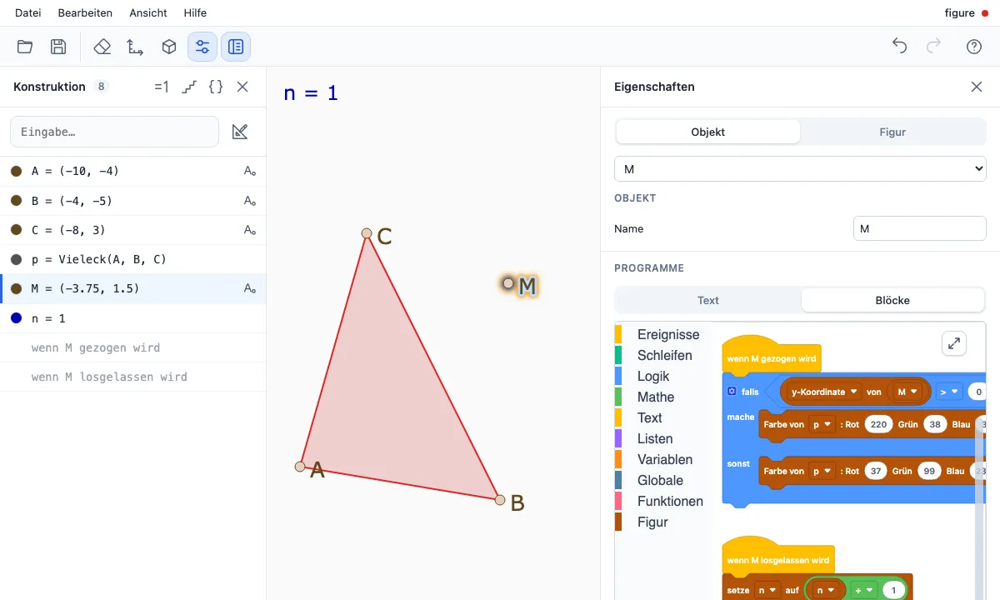
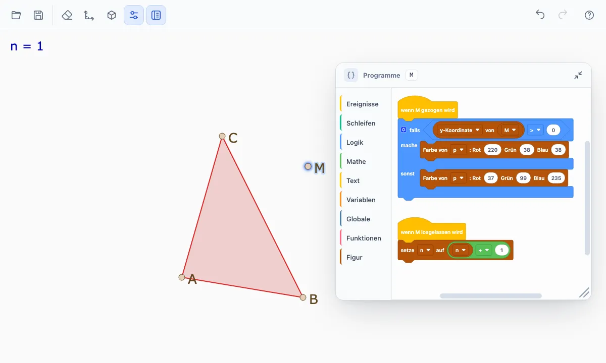

Ausdrücke und Schieberegler
Ausdrücke
Jede Zeile, die weder ein Punkt noch ein Befehl ist, erzeugt einen Ausdruck, oben links mit zwei Dezimalstellen angezeigt. Seine Art ergibt sich aus dem Text:
| Zeile | Art |
|---|---|
a = 3,
liste = [1, 2, 3]
|
Konstante |
t = "Hallo" |
Text |
f = 0.5x^2 - 4 |
Funktion von x (y, z, t); f(2) ruft
sie auf, f'(2) ihre Ableitung
|
f(x) = ax^2 + bx + c |
Kurve der Funktion, gezeichnet:
ax wird als a x gelesen, die
Schieberegler a, b, c werden erzeugt;
f(2) ruft sie ebenfalls auf
|
f(x) = x^2, (-1 <= x <= 2)
|
auf einem Intervall gezeichnete Kurve,
geschrieben wie in GeoGebra (≤ oder
<=); eine Grenze darf fehlen
((x >= 0)), und jede Grenze darf
eine Formel sein ((0 <= x <= a))
|
E = d(A, B) |
Messwert, neu berechnet, wenn sich die Figur bewegt |
u = "AB = " + round(d(A, B)*100)/100
|
berechneter Text |
In einer Formel steht ein Punkt für seine Koordinaten, eine Strecke für ihre Länge, ein Kreis für seinen Radius, ein Vieleck für seinen Flächeninhalt, ein Winkel für sein Maß. Vollständige Syntax: Formeln und Programme.
Ein Ausdruck wird durch Ziehen seines Textes verschoben; an einen Punkt geheftet, folgt er ihm. Antippen wählt ihn aus oder schreibt während einer Eingabe seinen Namen. Er wird in Schritten von 10 Pixeln platziert, was das Ausrichten erleichtert.
Schieberegler
r = Schieberegler(0, 5, 2): von 0 bis 5, Wert 2.
Die Grenzen dürfen Ausdrücke oder Formeln sein (Schieberegler(0, d(A, B), 1)). Schrittweite, Länge, Ausrichtung, Griff und Animation werden
in den
Eigenschaften
eingestellt. r = 5 macht daraus wieder eine
Konstante. Ausgewählt lässt er sich auch
mit der Feder
animieren.
Ziehen am Ende seines Balkens verlängert oder verkürzt ihn in Schritten von 20 Pixeln.
Ein unbekannter Name, der mit einem Kleinbuchstaben beginnt,
erzeugt einen Schieberegler von −5 bis 5, mit Schrittweite 0,1
und Wert 1: A = (a, 4),
d = y = m x + p. Ein griechischer Buchstabe erzeugt
einen Winkel von 0 bis 360°, mit Schrittweite 1° und Wert 45°
(von 0 bis 2π im Bogenmaß): P = (3; α). Eine
abgelehnte Zeile behält ihre Schieberegler nicht.
Berechnete Punkte
-
M = (x(B) + 1, y(A)): Koordinaten durch Formeln gegeben. -
N = Punkt(2*B - A): eine Formel, deren Wert ein Punkt ist. -
P = (3; 60°): Polarkoordinaten, Radius und Winkel.
Ist der Wert einer Zeile Name = Formel ein Punkt
oder eine Liste von Punkten, bieten Schaltflächen am Zeilenende
Punkt,
Liste von Punkten,
Liste von Strecken oder
Ausdruck an.
Eingabe nimmt die hervorgehobene Schaltfläche: Punkt
oder Liste bei einem großgeschriebenen Namen, sonst Ausdruck.
Daher liste = [1, 2, 3] und nicht
L = [1, 2, 3], was als Punkt im Raum gelesen würde.
Listen von Punkten
q = Liste(pts) zeichnet die Punkte des Ausdrucks
pts; ein undefinierter Punkt unterbricht die Linie.
Ein ausgewählter Ausdruck, dessen Wert eine Liste von Punkten
ist, bietet im Kontextbereich auch
und
an (und
bei einem Punkt als Wert): Die
Zeile wird geschrieben und der Ausdruck ausgeblendet.
L = {A, (1, 2), Punkt(A + [1, 0])}: eine Liste von
Punkten in geschweiften Klammern, jeder durch seinen Namen,
seine Koordinaten oder eine Formel gegeben.
Vieleck(L) ist das Vieleck ihrer Punkte;
Element(L, 2), oder L(2) in einem
Argument, ihr zweiter Punkt: Gerade(L(1), L(2)).
Eine Folge funktioniert genauso:
Vieleck(Folge((cos(k*360°/n), sin(k*360°/n)), k, 1,
n))
ändert die Anzahl seiner Ecken mit dem Schieberegler n.
In einer Formel ist L[0] der erste Punkt von L:
eckige Klammern zählen ab 0, Element ab 1.
(L, 1) bezeichnet Koordinaten, keinen Punkt von L:
der Editor lehnt es ab.
Eine Liste kann Listen enthalten:
M = {{(0, 0), (4, 0), (0, 3)}, {A, B, C}}, oder
M = {L, K} für zwei Listen L und K. Sie zeichnet
alle ihre Punkte. Element(M, 1) ist ihre erste
Liste: Vieleck(Element(M, 1));
Element(M, 1, 2) ist der zweite Punkt dieser Liste,
M[0][1] in einer Formel.
Folgen
L = Folge((k, k^2), k, -2, 2) setzt die Punkte (k,
k²) für k von −2 bis 2 mit Schrittweite 1; ein fünftes Argument
gibt eine andere Schrittweite an. Das Element kann auch eine
Zahl sein, Strecke(P, Q),
Gerade(P, Q), Kreis(O, r) oder
Vieleck(A, B, C, …), deren Argumente Formeln in k
sind: Folge(Kreis(A, k), k, 1, 3). Im Raum gibt ein
drittes Argument die Richtung u der Achse des Kreises an, die zu
seiner Ebene orthogonal ist: Kreis(O, r, u).
Eine Folge kann eine andere enthalten, deren Grenzen die
Variable der ersten lesen:
Folge(Folge((i, j), j, 1, i), i, 1, 4). In einer
Formel wird eine Punktliste über ihren Namen gelesen, ab 0:
L[0], L[k-1], L[i][j] für
verschachtelte Folgen, L.length für die Anzahl
ihrer Elemente. 2*i schreiben: 2i ist
eine komplexe Zahl.
Programme
Ein Ausdruck kann ein Programm sein: Anweisungen, getrennt durch
;, wobei die letzte den Wert liefert; es kann
andere Objekte gestalten (S1.setHidden(1)).
Sprache:
Formeln und Programme.
- (Palette, Gruppe „Programme“) öffnet ein leeres Programm; Erstellen oder Strg Eingabe erzeugt den Ausdruck.
- Bei einem vorhandenen Ausdruck bearbeitet der Abschnitt Definition der Eigenschaften den Text über mehrere Zeilen: Eingabe behält die Einrückung, Tab rückt ein, } rückt aus, Strg Eingabe übernimmt, Esc stellt wieder her, Formatieren rückt nach den geschweiften Klammern ein.
- Ein Fehler markiert die fehlerhafte Zeile oder das nicht passende Trennzeichen.
Blöcke und Schildkröte
Ein Programm lässt sich auch mit Blöcken schreiben: Der Abschnitt Definition wechselt von Text zu Blöcke. Die Blöcke werden aus den Kategorien (Schleifen, Logik, Mathe, Text, Fühlen, Listen, Variablen, Globale, Funktionen, Figur) gezogen und unter den Block Programm gehängt; ein Block gib … zurück liefert den Wert. Jede Änderung wirkt sofort und wird wie die anderen rückgängig gemacht. Text und Blöcke zeigen dasselbe Programm: Die Wahl bleibt für die nächsten erhalten.
Globale, die alle Programme der Figur teilen, werden in der Kategorie Globale mit Globale erstellen… angelegt; ein Programm setzt, erhöht oder liest sie. In einer Arbeitsmappe gelten sie für alle Seiten: Eine auf einer Seite gesetzte Globale hat auf den anderen denselben Wert.
In der Kategorie Listen liest der Block L [ i ] das Element Nr. i einer Liste, wobei das erste die Nr. 1 ist, und der Block L [ i ] = v ändert es in einer Variablen oder einer Globalen.
Der Block letztes Element von liest das letzte Element einer Liste; … am Ende von … anfügen verlängert die Liste einer Variablen und das erste Element von … entfernen (oder das letzte) verkürzt sie. die Liste … unterbrechen unterbricht die Linie, die eine Punktliste zeichnet, wie der angehobene Stift der Schildkröte: Die danach hinzugefügten Punkte beginnen eine neue Linie.
In der Kategorie Schleifen hält der Block … ms warten das Programm einer Schaltfläche an, während die Figur neu gezeichnet wird: genug, um Schritt für Schritt zu animieren. Ein erneutes Antippen der Schaltfläche stoppt das laufende Programm.
In der Kategorie Fühlen stellt der Block
frage … und warte eine Frage und hält das
Programm bis zur Antwort an, die in ein Feld getippt und mit OK
oder Eingabe bestätigt wird; der Block
Antwort liest sie dann, als Zahl, wenn sie eine
ist (12,5), sonst als Text. Jeder Programmlauf hat
seine eigene Antwort.
In der Kategorie Funktionen kann eine Funktion auch einen Wert liefern: Der Block um … gib zurück erzeugt einen Block, der sie aufruft und wie ein Wert eingesetzt wird. Die Variablen eines Programms teilen sich seine Funktionen, außer in den Funktionen von DGPad-Figuren, die die Variablen, die sie setzen, für sich behalten, wie in DGPad.
Die Kategorie Figur liefert auch den Winkel
dreier Punkte (Winkel 180°, zwischen 0 und
180°, oder 360°, orientiert), die
Fensterbreite, die
Einheit in Pixeln und die anderen Größen der
Ansicht; Pfeile von … setzt Pfeile an die Enden
der Strecken einer Liste (Länge und Breite in Pixeln). Der Block
Ausdruck nimmt eine getippte Formel auf, zum
Beispiel f(t), um eine Funktion der Figur zu
berechnen. In der Kategorie Text zeigt
Meldung … anzeigen eine Meldung an.
Schildkröte im Kontextbereich eines Punktes erzeugt die Schildkröte, die von diesem Punkt ausgeht, und öffnet sie in Blöcken. Sie geht vorwärts (in Pixeln oder Einheiten), dreht sich (in Grad), hebt oder senkt den Stift, ändert Farbe und Breite, füllt, schreibt, dreht sich zu einem Punkt oder geht zu ihm. Ihre Zeichnung, eine Liste, folgt dem Punkt und den Objekten, die das Programm liest. Solange ihr Programm angezeigt wird, ist die Schildkröte dort gezeichnet, wo sie endet, in ihre Richtung gedreht (in 3D ein Pfeil, grün, wenn ihre Oberseite zu einem zeigt): Jeder hinzugefügte Block zeigt, wie sie geht oder sich dreht.

Der Block Bild der Kategorie Schildkröte setzt
ein Bild zentriert an die Stelle, an der sich die Schildkröte
befindet, in ihre Richtung gedreht. Er erhält dessen Webadresse
oder einen Text data:image/….
Breite und Höhe sind in Pixeln
angegeben (bei -1 behält das Bild seine Größe),
Zoom vergrößert oder verkleinert es (1:
unveränderte Größe), und Deckkraft reicht von 0
bis 1.
Die Schildkröten von DGPad-Figuren öffnen sich genauso: bei
geöffnetem Eigenschaftenbereich ihre Zeile
blk_turtle_exp_… im Bereich „Konstruktion“
antippen. Ein Programm mit einer Anweisung ohne Block bleibt
Text.
Die Schaltflächen von DGPad-Figuren (ein Pfeil, gefolgt von einer Beschriftung) starten ihr Programm, wenn man sie berührt, auch bei geöffnetem Eigenschaftenbereich: So lässt sich das Programm ausprobieren, während man es bearbeitet. Ein Berühren ihres Kreises mit drei Punkten wählt die Schaltfläche aus, ein Ziehen verschiebt sie; Einstellungen im Kontextbereich öffnet ihr Programm in Blöcken. Der Block setze … auf der Kategorie Figur ändert den Wert eines Ausdrucks.
Schildkröten und Schaltflächen entstehen auch über die
Werkzeugpalette, Familie Programme:
Schildkröte geht vom
gewählten Punkt aus (eine leere Stelle erzeugt einen),
Schaltfläche wird an
die gewählte Stelle gesetzt; beide öffnen sofort ihr Programm in
Blöcken. In die Eingabezeile getippt, erstellt
Schaltfläche("Starten") eine Schaltfläche in der
Mitte der Ansicht; ihre Zeile im Bereich „Konstruktion“ ändert
ihre Beschriftung.
Ereignisprogramme
Wie in Scratch kann ein Programm auf ein Ereignis antworten: ein verschiebbarer Punkt, der gezogen, gedrückt oder losgelassen wird, ein Text oder eine Form (Vieleck, Kreis, Gerade, Bild…), auf die geklickt wird, ein Ausdruck, dessen Wert sich ändert. Es gestaltet Objekte und ändert mit dem Block setze … auf den Wert eines Ausdrucks oder setzt einen freien Punkt. Das Programm „gezogen“ läuft auch, während der Punkt animiert ist.
In der Werkzeugpalette, Familie Programme, wählen Wenn das Objekt gezogen wird, Wenn das Objekt gedrückt wird und Wenn das Objekt losgelassen wird einen verschiebbaren Punkt (das zweite auch einen Text oder eine Form), Wenn sich der Wert ändert einen Ausdruck. Das Programm öffnet sich in Blöcken unter seinem Startblock, zum Beispiel wenn M gezogen wird; gibt es es schon, wird es angezeigt.

Hier färbt das Ziehen von M das Dreieck oberhalb der x-Achse rot, darunter blau; das Loslassen erhöht n um 1.
- Der Abschnitt Programme der Eigenschaften eines Punktes, Textes, einer Form oder eines Ausdrucks zeigt alle seine Programme, seine Schildkröte eingeschlossen, jedes unter seinem Startblock und bearbeitbar. Text zeigt das zuletzt angeklickte.
- Ohne Programm öffnet Programm hinzufügen die Kategorie Ereignisse: Einen Startblock in die Arbeitsfläche ziehen erstellt das Programm.
-
Jedes Programm hat seine Zeile im Bereich „Konstruktion“,
zum Beispiel
wenn M gezogen wird: Ein Tippen darauf öffnet es. - Einen Stapel auf die Liste der Kategorien ziehen oder seinen Startblock löschen löscht das Programm.
- Rechtsklick auf einen Startblock: Stapel einklappen lässt nur diesen Block stehen, mit einem Abzeichen, das die Zahl seiner Blöcke angibt; ein Klick auf das Abzeichen oder Stapel ausklappen öffnet ihn wieder.
- Rechtsklick auf den Hintergrund: Alle Blöcke kopieren; auf einen Block: Ausgewählte Blöcke kopieren kopiert diesen Block und die darauf folgenden. Blöcke einfügen setzt sie an die angeklickte Stelle, für dasselbe Objekt, ein anderes oder eine andere Figur. Mit ihrem Startblock kopiert, kommen sie unter denselben Startblock des Objekts, falls er leer ist, wobei das Programm bei Bedarf erstellt wird; sonst bleiben sie daneben und lassen sich anschließen.
-
Ein ausgewählter Block, der ein Objekt benennt (Kategorie
Figur), oder ein Block, in dem ein solcher
Block steckt, übernimmt den Namen des Objekts, das man
danach in der Figur anklickt: Ist der Block
avonsetze n auf aausgewählt, ergibt ein Klick auf den Schieberegler bsetze n auf b. Ein Klick auf eine leere Stelle der Arbeitsfläche gibt den Block frei: Ein Klick auf ein Objekt zeigt dann seine Eigenschaften.
Die Schaltfläche oben rechts in den Blöcken vergrößert sie über der Figur, in einem durchscheinenden Fenster: Die Bereiche blenden sich aus, die Figur bleibt an ihrem Platz. Das Fenster wird an seiner Titelleiste verschoben (ein Doppelklick setzt es an seinen Platz zurück) und an seiner Ecke in der Größe geändert; dieselbe Schaltfläche bringt die Blöcke in den Bereich zurück.

Die Ereignisprogramme von DGPad-Figuren (Ziehen, Drücken und Loslassen eines Punktes, Änderung eines Wertes) öffnen sich und werden ebenso bearbeitet.
Das Startprogramm eines Ausdrucks oder einer Schaltfläche einer DGPad-Figur läuft einmal, wenn die Figur geöffnet wird; es erscheint unter dem Startblock wenn die Figur geöffnet wird.